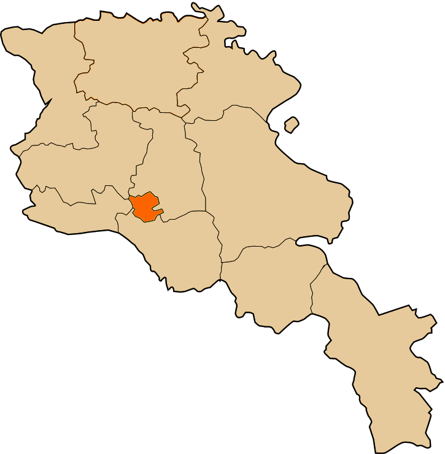

Հետ գնալ
ԵՐԵՎԱՆ
Երևան, քաղաք Հայաստանի արևմուտքում՝ Հրազդանի երկու ափերին։ Հանդիսանում է պետության
մայրաքաղաքն ու խոշորագույն բնակավայրը, վարչաքաղաքական, տնտեսական կենտրոնը։ Համաձայն Հայաստանի պաշտոնական տեղեկատվության՝ 2014 թվականի
հունվարի մեկի դրությամբ ունի 1.068.000 բնակիչ։
Համաձայն տարածված տեսակետի՝ Երևանը հիմնադրել է Վանի թագավորության արքա Արգիշտի Ա-ն մ. թ. ա. 8-րդ
դարում Էրեբունի անվամբ։ Բնակավայրի տարածքում հայտնաբերվել են ավելի հին քաղաքների ու ավանների ավերակներ, ինչպիսին են Թեյշեբաինին, Շենգավիթը,
որոնք ունեն ավելի հին թվագրում։ Քաղաքի տեղանվան ծագման հետ կապված կան շատ վարկածներ, մասնավորապես, ըստ ժողովրդական ավանդության, Երևանը կապվում է Նոյի անվան հետ,
իբր Նոյն է այդպես կոչել առաջին ջրհեղեղից հետո երևացող ցամաքը։ Վաղ միջնադարում քաղաքը Մեծ Հայքի Այրարատ նահանգի Կոտայք գավառի սահմաններում էր։
Տեսարժան վայրեր Երևանում ՝